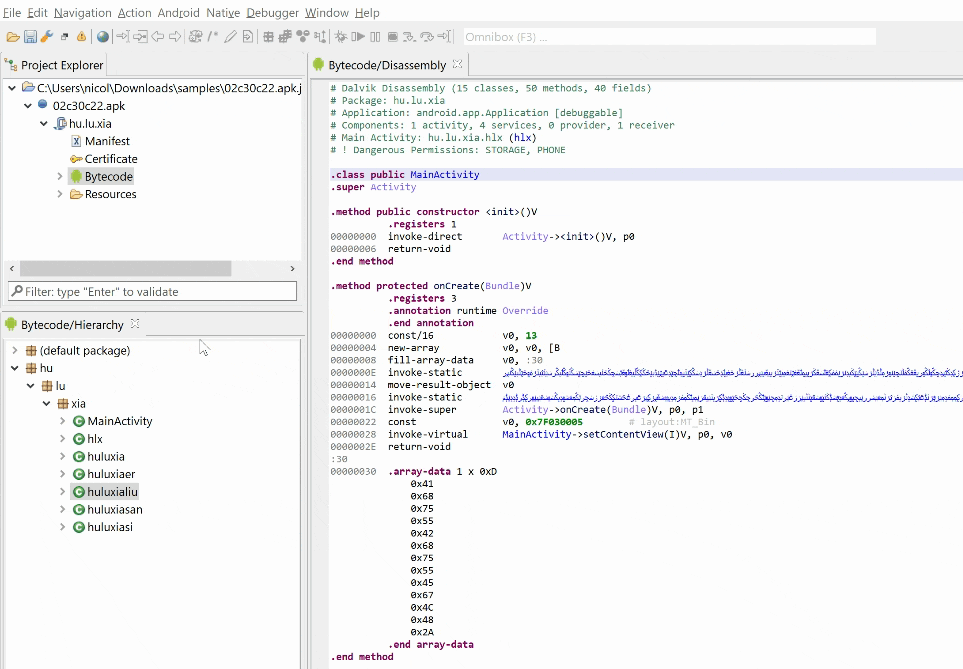

The "Do not replace Views" command, located in the Navigation menu, instructs the GUI client to keep tabs holding a similar view type to stay open when a different view of the same type is opened (else, the tab contents would simply be updated). It is handy when you need to have multiple decompilations opened in separate views.
